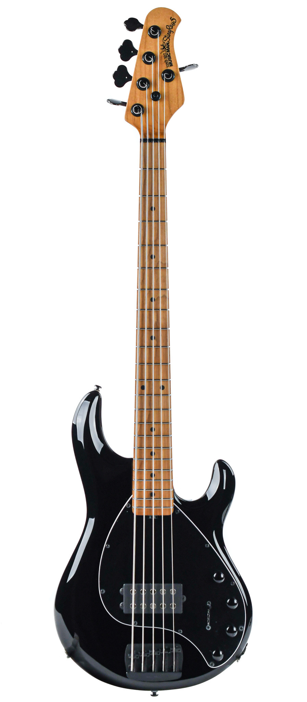
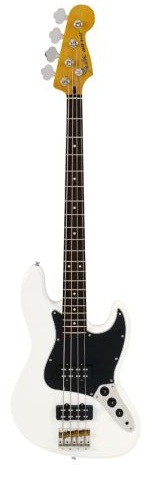

Bass Guitars Section
Bass Guitars Section
|Home|
|Acoustic Guitars|
|Electric Guitars|
|Bass Guitars|
|Drums|
|Amplifiers|| Music Man StingRay Special 5 Black | |||
|---|---|---|---|
|  | Design/Architecture Detail | Description | |
|
The first bass designed by Ernie Ball Music Man, the Stingray 5 was unveiled in 1987 and has been an industry standard for extended range basses ever since. This performance-built bass in which any serious player can appreciate. 22 stainless steel frets provide exceptionally long fret life and excellent tone. Redesigned humbucker with 18V preamp and 3-band EQ gives you fat, punchy, and versatile tone. |
||
| Price: ₱193.70.00 | |||
| Fender Jazz Bass | |||
|  | Design/Architecture Detail | Description | |
|
The Fender Jazz Bass (often shortened to J-Bass) is the second model of electric bass created by Leo Fender. It is distinct from the Precision Bass in that its tone is brighter and richer in the midrange and treble with less emphasis on the fundamental frequency. The body shape is also different from the Precision Bass, in that the Precision Bass has a symmetrical lower bout on the body, designed after the Telecaster and Stratocaster lines of guitars, while the Jazz Bass has an offset lower bout, mimicking the design aesthetic of the Jaguar and Jazzmaster guitars. |
||
| Price: ₱17,950.00 | |||
|Go Back From the Top|